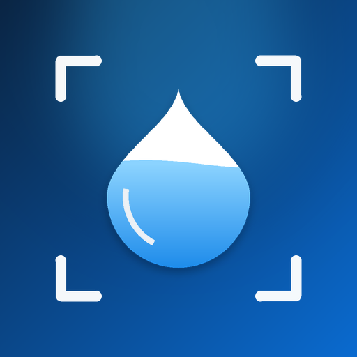

HydroAIآخر تحديث: أكتوبر ٢٠٢٦
يساعدك HydroAI على تذكّر شرب الماء. توضح هذه الصفحة المعلومات التي يستخدمها التطبيق، وإلى أين تذهب، وما الخيارات المتاحة لك.
تُحفظ هذه المعلومات على جهازك فقط. لا نراها ولا نرفعها.
تسجّل الدخول بحساب Apple أو Google. نستلم معرّف حساب فريدًا وبريدك الإلكتروني واسمك إن شاركه المزوّد. نخزّن اسم العرض ولغة التطبيق في ملف شخصي على خادمنا لدى Supabase في أوروبا. إن شاركت Google صورة ملفك الشخصي نحتفظ برابطها فقط ونعرضها في بطاقة الحساب، وتُحمَّل من خوادم Google مباشرة إلى جهازك. لا نستلم أبدًا كلمة مرور Apple أو Google.
تُنشأ التذكيرات والمنبّهات على جهازك. يطلب التطبيق إذن الإشعارات، وعلى أندرويد إذن جدولة المنبّهات الدقيقة. السماح للمنبّه بالرنين في الوضع الصامت اختياري، ويحتاج دائمًا إلى موافقتك في إعدادات النظام.
إذا أرسلت اقتراحًا أو شكوى، نستلم نصها ونوعها ولغة تطبيقك والبريد الإلكتروني الذي قد تضيفه ومعرّف حسابك إن كنت مسجّلًا. نستخدمها فقط لفهم ملاحظاتك والرد عليها وتحسين التطبيق.
تتم معالجة الاشتراكات عبر App Store أو Google Play، ولا نرى بطاقتك المصرفية أبدًا. نستخدم RevenueCat للتحقق من حالة اشتراكك، وهو يستلم معرّف مستخدم داخل التطبيق ومعلومات الشراء.
نستخدم Firebase Analytics وFirebase Crashlytics لمعرفة الميزات المستخدمة وإصلاح الأعطال. لا تتضمن هذه التقارير اسمك أو بريدك أو صورك أو كمية الماء التي تشربها.
لا نبيع بياناتك، ولا نعرض إعلانات، ولا نتتبعك عبر تطبيقات أو مواقع أخرى.
قد يعالج مزوّدو الخدمة لدينا (Supabase وGoogle Firebase وRevenueCat وApple وGoogle) البيانات في دول غير دولتك، وفق ضماناتهم الخاصة.
يمكنك حذف حسابك في أي وقت من المزيد ← حذف الحساب، فيُزال حسابك وملفك الشخصي من خوادمنا. تُزال البيانات الموجودة على هاتفك عند حذف التطبيق. تبقى سجلات الشراء لدى Apple وGoogle وRevenueCat كما يقتضي القانون. لحذف رسالة أرسلتها لنا، راسلنا بالبريد.
HydroAI غير موجّه للأطفال دون 13 عامًا، أو دون الحد الأدنى للسن في بلدك، ولا نجمع بياناتهم عن علم.
تتضمن النسخ التجريبية الداخلية أداة اختيارية لمشاركة الصور لتحسين التعرّف. لا تُشارك الصور إلا إذا اختار المختبِر إرسالها، وتُسمّى برمز مشارك بدل الاسم. هذه الأداة ليست جزءًا من التطبيق المنشور.
قد نحدّث هذه السياسة من وقت لآخر، وسنعلن عن التغييرات المهمة داخل التطبيق.
أسئلة عن الخصوصية؟ راسلنا على apps@nafes.net.
Last updated: October 2026
HydroAI helps you remember to drink water. This page explains what information the app uses, where it goes, and the choices you have.
This information is stored on your device only. We cannot see it and we do not upload it.
You sign in with Apple or Google. We receive a unique account id, your email address and your name if the provider shares it. We store your display name and app language in a profile on our server, hosted by Supabase in Europe. If Google shares your profile picture, we keep only its link and show it on your account card; it is loaded straight from Google's servers to your device. We never receive your Apple or Google password.
Reminders and alarms are created on your device. The app asks for permission to send notifications and, on Android, to schedule exact alarms. Letting the alarm ring through silent mode is optional and always needs your approval in the system settings.
If you send a suggestion or a complaint, we receive its text, its type, the language of your app, the email address you may add, and your account id if you are signed in. We use it only to understand and answer your feedback and to improve the app.
Subscriptions are processed by the Apple App Store or Google Play, and we never see your payment card. We use RevenueCat to check your subscription status; it receives an app user id and purchase information.
We use Firebase Analytics and Firebase Crashlytics to learn which features are used and to fix crashes. These reports do not include your name, email, photos or how much water you drink.
We do not sell your data, we do not show ads, and we do not track you across other apps or websites.
Our providers (Supabase, Google Firebase, RevenueCat, Apple and Google) may process data in countries other than yours, under their own safeguards.
You can delete your account at any time from More → Delete account. This removes your account and profile from our servers. Data on your phone is removed when you uninstall the app. Purchase records stay with Apple, Google and RevenueCat as the law requires. To remove a message you sent us, email us.
HydroAI is not directed at children under 13, or under the minimum age in your country, and we do not knowingly collect their data.
Internal test builds include a voluntary tool for sharing photos to improve recognition. Photos are shared only when the tester chooses to send them, labelled with a contributor code instead of a name. This tool is not part of the public app.
We may update this policy from time to time and will announce important changes inside the app.
Questions about privacy? Write to apps@nafes.net.